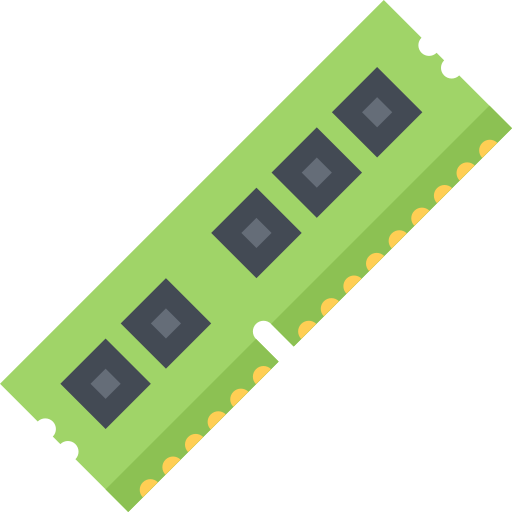

Processor
Processor
Intel(R) Core(TM) i9-9900K
Graphics Card
Zotac NVIDIA RTX 3080

RAM Memory
HyperX 32GB DDR4 3600MHz
 SSD Drive
SSD Drive
Samsung 970 EVO 1TB NVMe
HDD Drive
WDC WD10EZEX-00BN5A0
Motherboard
MSI MPG Z390 Gaming Pro Carbon
Power Supply
be quiet! Straight Power 11 850W
 Case
Case
MSI MPG Gungnir 100D
Liquid CPU Cooling
NZXT KRAKEN X73 Liquid Cooling
 Additional Cooling Fans
Additional Cooling Fans
Corsair 3x PWM Fan LL120 RGB
Na tym projekcie spędziłem:
00:00:00
hh : mm : ss